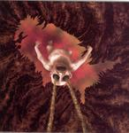

| Artist: | Eyestrings |
| Title: | Consumption |
| Label: | Split Difference SDR 78002 |
| Length(s): | 64 minutes |
| Year(s) of release: | 2005 |
| Month of review: | [05/2006] |
| 1) | All Sales Final | 2.02 |
| 2) | Valid For A Week | 11.48 |
| 3) | Stagnant | 4.54 |
| 4) | Code Of Tripe | 12.04 |
| 5) | Slate Clean | 7.17 |
| 6) | Groove Seven | 5.46 |
| 7) | Lifelines | 20.00 |
An ordinary music fan, who did not listen beyond the end of this song, it may be that this is indeed the best things that happened after Radiohead, but Valid For A Week brings us to totally different territory (or is it?). Point is that now the King Crimson influences come in full force: angular guitar, mellotron and the like. Indeed, one is reminded even stronger yet of the likes of Anekdoten, although the light acoustic guitar also gives the impression of singersongwriter aspects. It is surprising how a band can incorporate such widely diverging elements into a single song. The vocals that follow remind of uncle Matthew's band, Discipline, although the harmony vocals are really catchy, and of a type only found in American progrock bands. This is really excellent stuff, with some great tension building (the piano lining the guitar), and it rocks beyond compare. Guitar playing is sharp throughout here, and when you have such great melodies to work with, one can meander at will for a period. Surprisingly, I also smell a bit of Genesis in here, the rowdy side of Hackett on Nursery Cryme. Although the band takes it elements from all these places, the combination is new and refreshing, with especially the catchy chorus giving the song the identity of its own. Not for the faint of heart, though.
Stagnant is quite a bit shorter and lighter, reminding me strongly of a Radiohead song. No Apologies?? However, the song also had, besides the more acousticy parts, its meandering, proggy aspects. Still, the song does remind me a bit too strongly.
Code Of Tripe brings the Crimson influences back in, with the strongly angular guitar play. But then, the music dies down largly, and we are in for piano and a bit of atmosphere. Thus the band alternates power with melody, aggresion with feeling, albeit sad ones. The style of this is very much in the line of Valid For A Week, with nods to Anekdoten, Discipline and the already mentioned Crimson. But this time, the poppy choruses are not present, and we get something altogether more Discipline like.
Slate Clean opens with the bass bobbing and percussion setting in. We are in what seems to me more Djam Karet like territory: free form and improvised. But it does not stay like this, because the band chooses to veer into piano dominated territory. The vocals are hard to describe. They have a certain lightness to them, a headiness and unsteadiness, that befits the music well. Groove Seven follows the Djam Karet approach even more, with a strongly groovy tune full of rowdy guitars and solo organ, mellotron and keyboards.
The album closes with Lifelines, exactly twenty minutes in length. It opens with thematic piano play. The guitar lines are at first more in the line of Steve Hackett's refined playing. Not surprisingly, this song brings back all the elements that could be heard in the two earlier epics. Strong are the break for the percussive after almost six minutes. On the whole however, I think the song lacks one or two great melodies in addition to the good theme that it does have. This one cannot drive Valid For A Week from its spot as favourite song of the album. Even the majestic washes of synths and hopeful singing at the end does not change this.